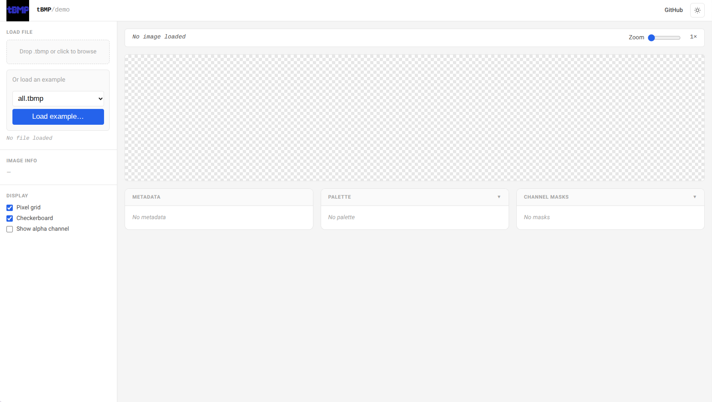
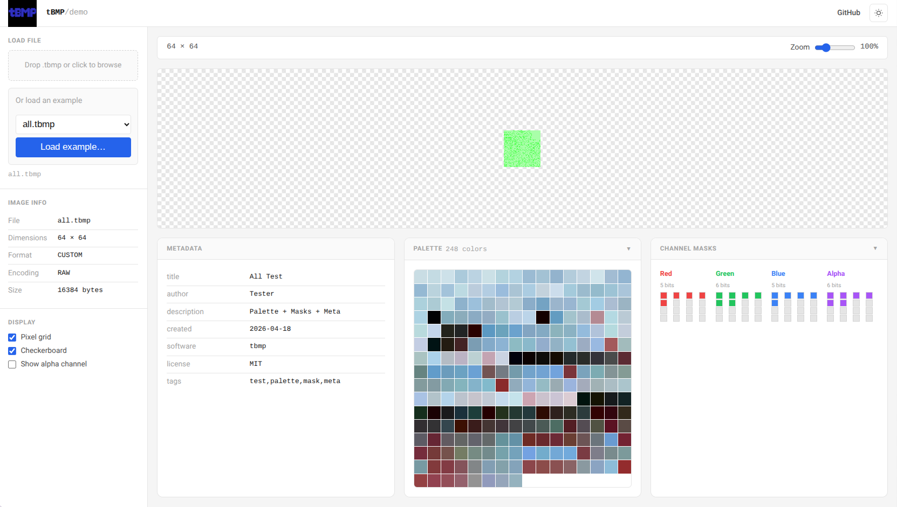
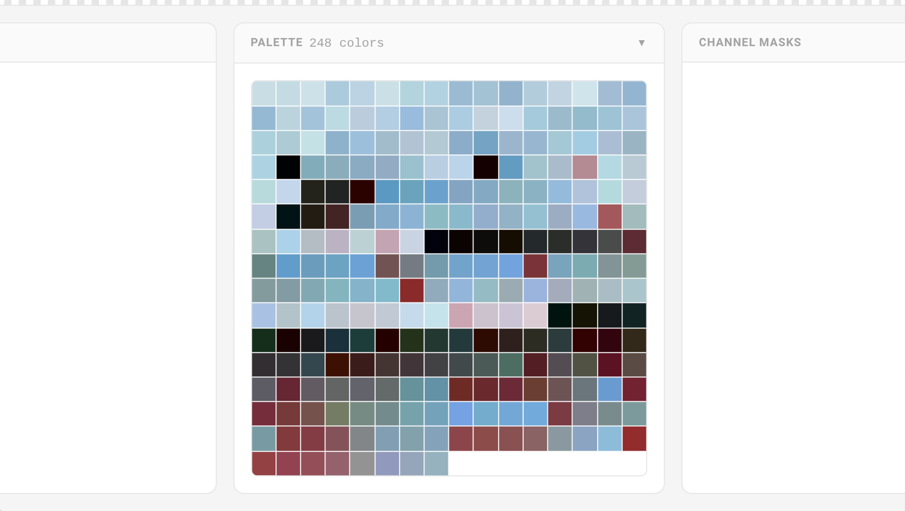
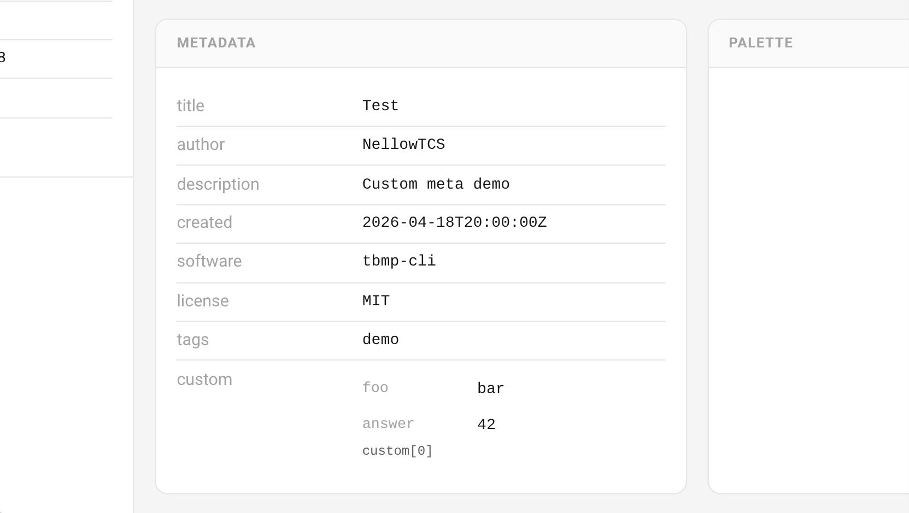
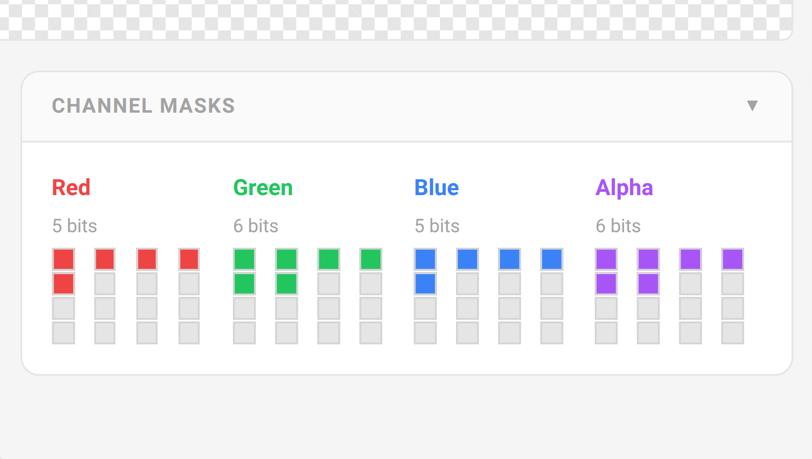

tBMP
tBMP (Tiny Bitmap Format) is a binary image format designed for small bitmaps. It gives you multiple encoding options, metadata support, and a zero-dependency C library for reading, writing, and manipulating your images.
Try the tBMP Demo!
Want to see tBMP in action? Check out the interactive web demo! Load, inspect, and visualize .tbmp files right in your browser. No install needed.
What it solves
You’re working with small images where file size or decode speed matters. Game sprites, embedded UI, firmware assets, the usual suspects. The big image formats drag in dependencies and compression algorithms you don’t need.
tBMP keeps it simple: a predictable binary layout, zero external deps, and encodings that actually match your data patterns.
Features
RAW, RLE, zero-range, span, sparse pixel, and block-sparse. Pick what fits your data best.
The format is defined in tBMP.ksy. Parse with confidence: the structure is enforced.
Plain C. Link libtbmp.a and you’re done.
Palettes, pixel masks, and custom metadata chunks when you need them.
Quick Example
Read an image:
#include "tbmp_reader.h"
FILE *input = fopen("sprite.tbmp", "rb");
tbmp_image img;
if (tbmp_read(input, &img)) {
printf("Loaded %dx%d image\n", img.width, img.height);
}
fclose(input);
Write an image:
#include "tbmp_write.h"
tbmp_image img = {
.width = 32,
.height = 32,
.encoding = TBMP_ENCODING_RLE,
.data = pixel_data,
.data_size = 1024
};
FILE *output = fopen("output.tbmp", "wb");
tbmp_write(output, &img);
fclose(output);
That’s it. No external libs, no configure scripts.
tBMP Logo
The tBMP logo is available as both a PNG and a tBMP file. Use it for badges, splash screens, or to show off your tBMP support!
Download:
{kind=link}
You’ll also see the logo on the web demo and in the README. Feel free to use it in your own projects!
tBMP Demo
The tBMP web demo lets you load, inspect, and experiment with .tbmp files directly in your browser. Below are screenshots highlighting the main features and panels you’ll find in the demo:





You can try all these features live at the tBMP Web Demo.
Installation
cmake -B build
cmake --build build
Static library: build/libtbmp.a. Include include/ for headers.
cargo add tbmp
Or git:
tbmp = { git = "https://github.com/NellowTCS/tBMP", branch = "main" }
npm install @nellowtcs/tbmp
Or use directly:
<script type="module">
import TBmp from 'https://cdn.jsdelivr.net/npm/@nellowtcs/tbmp/tbmp_wasm.js';
</script>
Next Steps
- Core Concepts: How the format is structured
- Quick Start: Get up and running in 5 minutes
- Encoding Guide: Pick the right encoding for your data
- Versioning and Evolution: Compatibility rules for future format growth
- Design Philosophy: Why tBMP is intentionally small and explicit
- tBMP for Embedded Systems: Practical guidance for constrained targets
- tBMP for Games: Asset pipeline and runtime patterns for game projects
- CLI Guide: Use the
tbmpcommand-line toolkit - API Reference: Full function docs